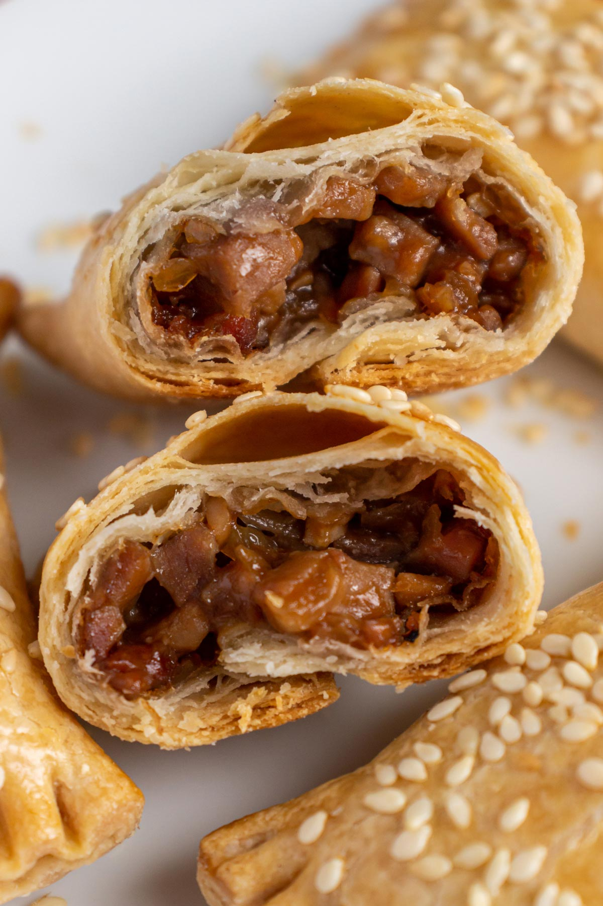

Puff Pastry
home

Description
Chinese style Puff pastry Pao with sweet soy chicken
simple at home recipe to try, you can use any additional ingredients in your refrigerator!
Ingredients
- 1 (14-16 ounce) sheet puff pastry, thawed
- 17 eggs, divided
- 1/2 teaspoon five-spice powder
- 1 tablespoon light soy sauce
- 2 tablespoons chopped green onions
Cooking Steps
- Gather all ingredients and preheat the oven to 400 degrees F (200 degrees C). Line a baking sheet with parchment paper.
- Lightly flour your work surface. Roll out puff pastry sheet into a 12x16-inch rectangle using a rolling pin, about ⅛ inch thin. Transfer the dough to the prepared baking sheet and fold over the edges to form a ½-inch wide crust.
- Beat 1 egg with 1 tablespoon of water to make an egg wash. Brush egg wash onto the puff pastry to help the sesame seeds and scallions adhere. Use a fork to poke holes all over the middle of the puff pastry. Score the inner edge of the crust with a paring knife.
- Bake puff pastry and eggs for an additional 6 to 10 minutes, depending on how runny or firm you like your yolks. Keep in mind, they will continue to cook a bit after you take them out of the oven.
- Mix soy sauce and chili oil, and drizzle evenly over the eggs. Top with the remaining scallions, cut into 6 pieces, and serve!